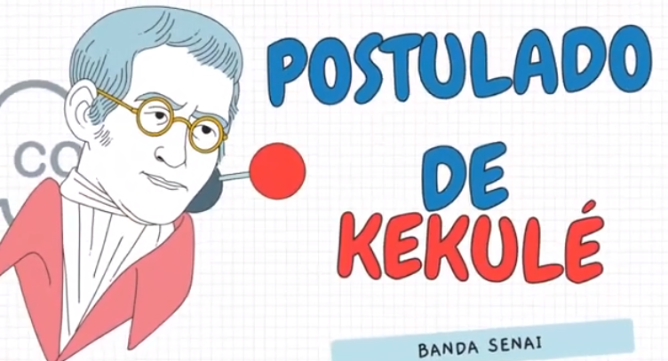
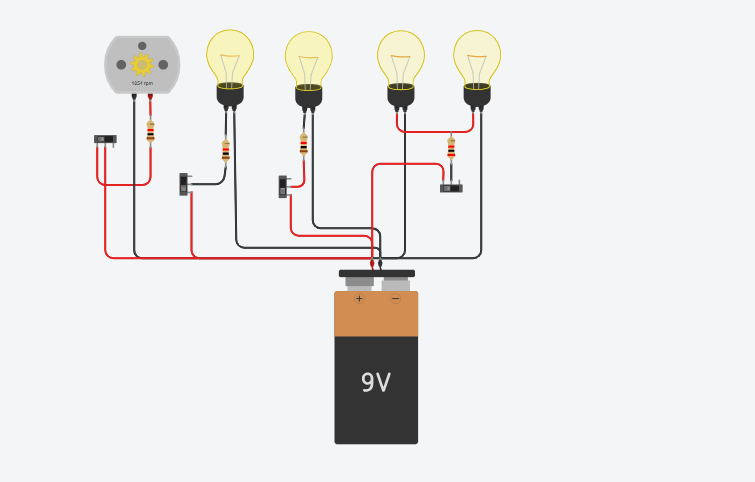

NATUREZA
ATIVIDADE 1:
PARÓDIA POSTULADO DE KAKULÉ

O primeiro passso para iniciar esta atividade de Postulado de Kekulé (conteudo na qual estavamos aprendendo), seriam formar grupos de no máximo 5 alunos, e após isso cada grupo devia criar uma parodia de no minimo dois minutos sobre esse assunto e que contesse todos do grupo no video. Após isso a entrega deveria ser através do classsroom,enviando o link upado no youtube, e com o resultado do grande esforço realizado por mim e minha dupla, conseguimos alcançar o tão esperado A.
ATIVIDADE 2:
CIRCUITO ELÉTRICO INICIAL

O primeiro passso para iniciar esta atividade do circuito eletrico inicial (conteudo na qual estavamos aprendendo),cada pessoa devia criar um projeto elétrico de uma casa com 4 cômodos (sala, quarto, banheiro e cozinha), cada cômodo tem uma lâmpada, apenas o banheiro tem o chuveiro além da lâmpada. Depois de realizar esse processo cada um devia tirar prints do seu projeto e anexe aqui ou publique no class o link do seu projeto..Após isso a entrega deveria ser através do classsroom, e com o resultado do grande esforço realizado por mim e meu grupo, conseguimos alcançar o tão esperado A.